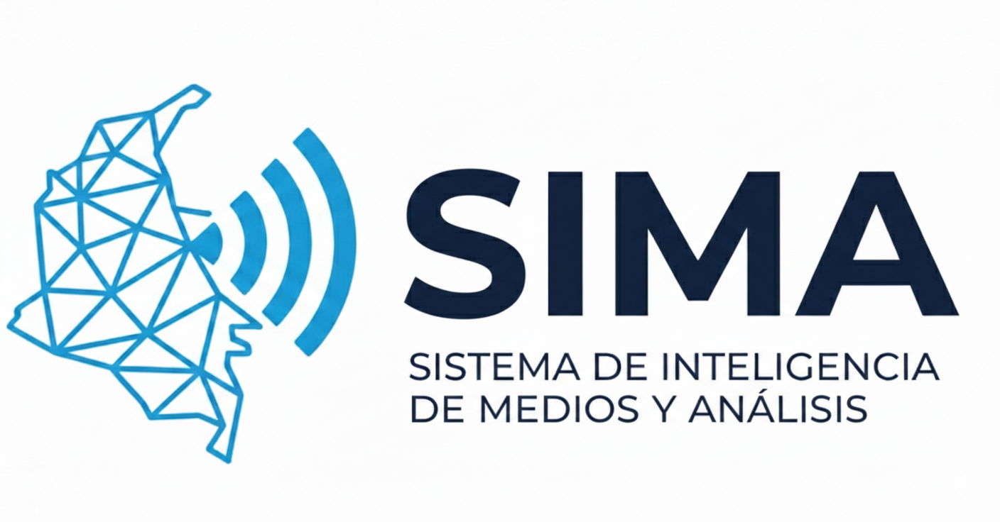
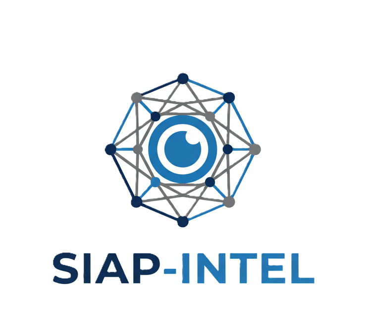
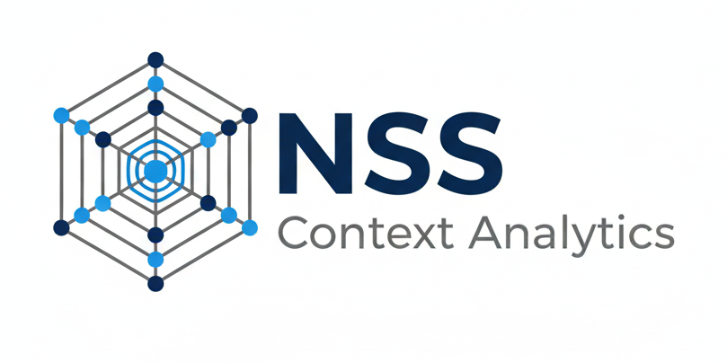
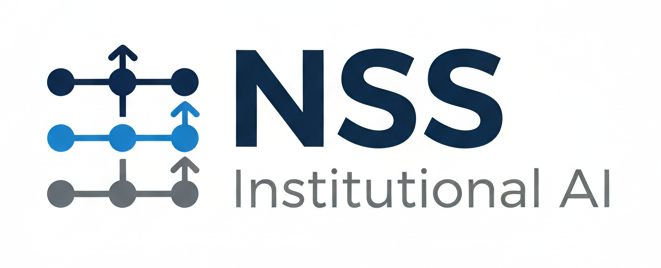

SIMA
Sistema de Inteligencia y Análisis de Medios orientado para sector privado, gobiernos locales e instituciones públicas.
Integra monitoreo de fuentes abiertas, medios digitales y redes sociales mediante APIs,
generando alertas tempranas, mapas dinámicos de incidencia y reportes ejecutivos automatizados.
Permite detectar eventos emergentes, patrones territoriales y cambios en la percepción pública
con trazabilidad y criterios configurables por región.

SIAP-Intel
Plataforma estratégica de análisis y gestión segura de información institucional.
Diseñada para consolidar, clasificar y estructurar datos de relevancia en entornos controlados,
con control de accesos, registro de actividad y cumplimiento normativo.
Su despliegue en la nube permite integrarse con sistemas existentes y facilita
análisis estructurado, consultas avanzadas y generación de reportes estratégicos.

NSS Context Analytics
Servicio especializado de análisis estratégico y evaluación de riesgo contextual para
seguridad privada, inversión regional y corporativos con exposición operativa.
Integra monitoreo de noticias, redes sociales y datos públicos para identificar
tendencias emergentes, riesgos reputacionales, conflictividad social y variaciones
en el entorno político-regulatorio. Entrega informes ejecutivos y alertas priorizadas
orientadas a toma de decisiones directivas.

Automatización e IA
Motor de inteligencia automatizada basado en agentes de IA y flujos orquestados (n8n),
diseñado para clasificación, resumen, priorización y trazabilidad de información.
Cada cliente opera con configuraciones personalizadas de palabras clave, niveles de riesgo
y reglas de cumplimiento. El sistema transforma grandes volúmenes de datos en
información estructurada, auditable y alineada a procesos institucionales.